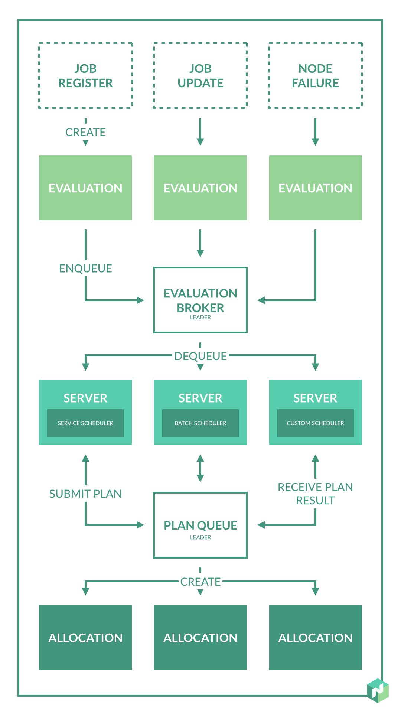

### Overview
- Part 1: Intro
- What is the problem
- What solutions we have
- Part 2: Consul/Nomad
- Overview
- Architecture
- Part 3: Showcase
- Summary
Intro
- What is the problem?
- What solutions are there
What is the problem?
- Single source of truth
- Resource utilization
- Load Balancer management
What solutions are there

Consul/Nomad Overview
- Consul
- Tool for discovering and configuring services in your infrastructure
- Nomad
- Cluster manager and scheduler designed for microservices and batch workloads
Nomad
- Agent - Server or Client mode
- Servers are responsible for managing the cluster
- A client is a very lightweight process that registers the host machine
- Nomad Jobs
- Servers are responsible for managing the cluster
- A client is a very lightweight process that registers the host machine
Nomad
- Resource manager
- Nomad collects information on the available resources and capabilities per host
- Scheduler
- It is the process of assigning tasks from jobs to client machines, respecting the
constraints as declared in the job, and optimize for resource utilization
Nomad Jobs
- Types: Service, Batch, System
- Drivers: Docker, Java, Isolated Fork/Exec Driver, Qemu Driver, Raw Fork/Exec Driver, Rkt Driver
Nomad Scheduler

- State is changed->Evaluation
- Evaluation Broker-> Queuing evaluations
- Scheduler types->batch, service, system,core
- Evaluation plan -> Allocation is created
Summary - What was the problem?
- Single source of truth
- Resource utilization
- Load Balancer management
Nomad drawbacks
- Nomad is still under "development"
- Started - SEP 28 2015, Current version 0.5.2
- Documentation could be better
Questions - Discussion?